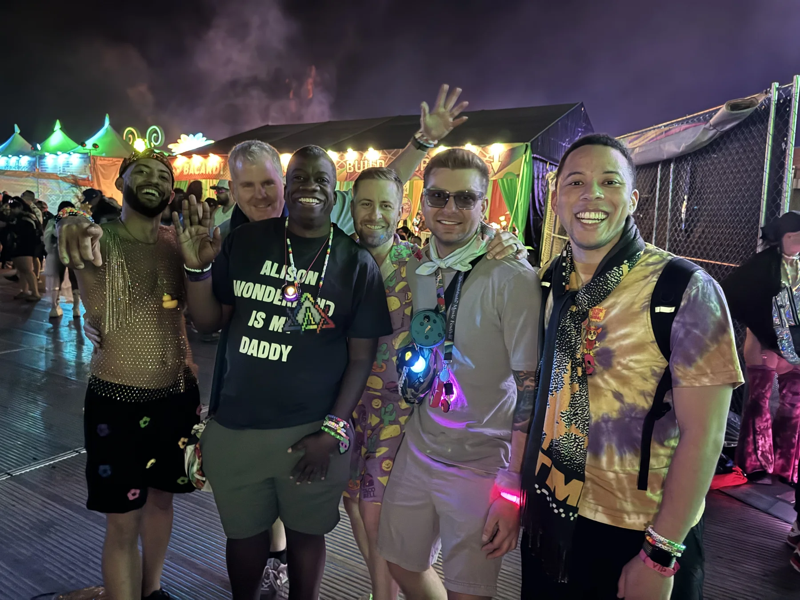

YOU’RE INVITED
A little music.
A little play.
A lot of life.
Welcome to Gordon’s world. Find a night we could share, take a playful detour, or follow a story that’s still unfolding.
Go at your own pace. Everything works with sound off.FOUR WAYS IN
What are you in the mood for?
Each door stands on its own.
You can always come back here.

01 / TOGETHERShows with Friends
Find the next good night. Make a mix. Leave with a plan worth sharing.
Find our next night ↗A quick browse or a long daydreamIsland Hop
Eight places in Gordon’s life, made playable. Start gently, then follow your curiosity.
Take the guided hop ↗Play, explore, or simply readThe Media Log
Games, ideas, and making room. Watch a conversation or explore the record behind it.
Watch a story ↗Clips, appearances, and source linksWith gratitude
The deeper record made for Camilla Benbow and David Lubinski at Vanderbilt.
Open the quiet reading room ↗The complete, sourced reading editionWHAT WE SEE · ASTRA + DARBY
A recurring thread:
making room for people.
A dance floor, a game, a classroom, a body of work: our reading is that you keep finding ways to turn participation into belonging. These four doors let a friend experience that idea instead of reading a résumé.
The shows look forward. The media log looks back. Island Hop lets you play in the present. The Vanderbilt record asks what a life looks like across time. Together, they make a portrait that keeps moving.
A LITTLE SOMETHING TO KEEP
A postcard from the islands.
The eight-island Canva keepsake, ready to open or save from Canva.